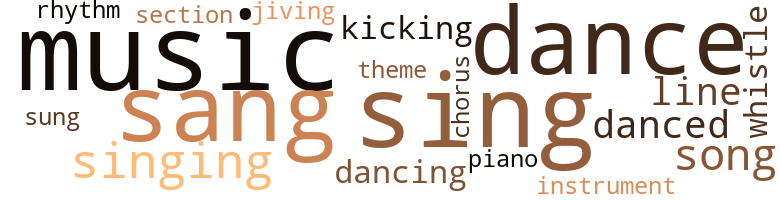
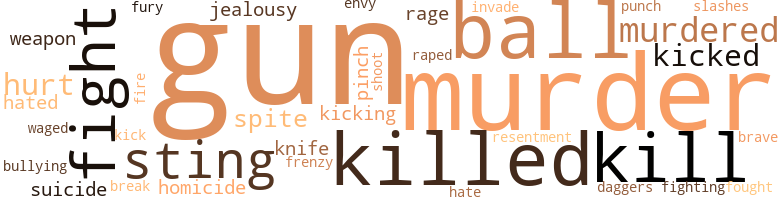
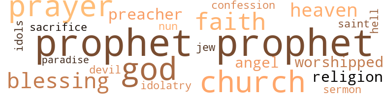

Double Circle People (The), by Robinson, J. Terry (1970)
56 music-related terms matched in this text.
Most frequent terms in this topic: sing (7); music (7); dance (6); sang (6); singing (5)
chorus.n.01
Definition: any utterance produced simultaneously by a group
| word | sentence |
|---|---|
| chorus | " They 're three chorus broads . |
dance.n.01
Definition: an artistic form of nonverbal communication
| word | sentence |
|---|---|
| dance | The invited guests included , La Mar and La Mi - a dance act which appeared with her during the last week , a few boys from the band , Billy Dean and his friend , a large hunk of man who dwarfed Billy ; three chorines from the line at Club Savannah , a representative of Hound Records , her agent - who brought along a blonde and redhead , and Jerri Branch - Sally 's girl friend from the Blue Violet . |
| dance | The bodies of the man and woman swayed , wiggled , and trem - bled like those , dance students claim , native tribes of old did in respect to their god of passion . |
| dance | Yet , to the patron of the dance , the art of La Mar and La Mi was not lewd . |
| dance | But to those watching , with possible exception of the three chorines , it is safe to say there were no patrons of the art of dance present . |
| dance | " That was brilliant , " said a stranger , who was of the unin - vited but obviously a patron , of the dance . |
dance.n.02
Definition: a party of people assembled for dancing
| word | sentence |
|---|---|
| dance | She stood with glass in hand , her yellow hair brushed straight back and her manish tailored suit speaking for the role she was playing , watching the dance team of La Mar and La Mi give their version of the touchless intercourse . |
dance.v.02
Definition: move in a pattern; usually to musical accompaniment; do or perform a dance
| word | sentence |
|---|---|
| dancing | " Come on , dancing man . " |
| dancing | " Come on , dancing man . |
dance.v.03
Definition: skip, leap, or move up and down or sideways
| word | sentence |
|---|---|
| danced | As he dressed the dream of his future , the one he had created and nourish , danced softly across his brain . |
| danced | Sally danced through the door of the bar like an actress making her entrance on stage . |
| danced | The thought had danced across his mind that perhaps he 'd have to make love to Dora . |
jive.v.01
Definition: dance to jive music; dance the jive
| word | sentence |
|---|---|
| jiving | I thought he was jiving because he did n't know if I could sing or not , " she stretched her legs out and motioned for the ashtray . |
kick.v.04
Definition: kick a leg up
| word | sentence |
|---|---|
| kicking | Larry stuck out his mouth for it , while at the same time kicking a mixture of dope and blood from his arm back into the dropper . |
| Kicking | Kicking I mean , " said Pinhead flip - ping the butt into the lake . |
music.n.01
Definition: an artistic form of auditory communication incorporating instrumental or vocal tones in a structured and continuous manner
| word | sentence |
|---|---|
| music | With each beat of the drum escaping the loudspeaker , and losing its battle with the sound - proof walls , some part of the naked bodies kept in time with the music . |
| music | His eyes were opened wide and rolled about with the beat of the music . |
| music | Now the music was coming to an end . |
| music | In a few moments soft , melodious music filled the car . |
| music | A music shop bore his name . |
| Music | Music and dancing , and people were all about . |
| music | The six-piece band started its music as a few well-wishers made their way to the table that held the cake . |
| music | The music stopped . |
musical_instrument.n.01
Definition: any of various devices or contrivances that can be used to produce musical tones or sounds
| word | sentence |
|---|---|
| instrument | " It 's her phrasing and improvising when she scats like an instrument in a jazz band , " said Max . |
piano.n.01
Definition: a keyboard instrument that is played by depressing keys that cause hammers to strike tuned strings and produce sounds
| word | sentence |
|---|---|
| piano | During one of their numbers I was standing beside the piano humming along with the song . |
rhythm.n.04
Definition: the arrangement of spoken words alternating stressed and unstressed elements
| word | sentence |
|---|---|
| rhythm | " How would you like to have between one-hundred and one-thousand dollars cash money ? " the words came in prac - ticed rhythm . |
section.n.01
Definition: a self-contained part of a larger composition (written or musical)
| word | sentence |
|---|---|
| section | " He heard her story out , and upon learning that said murder had been committed in the section of Manhattan known as Greenwich Village notified us here at this pre - cinct . |
sing.v.02
Definition: produce tones with the voice
| word | sentence |
|---|---|
| sang | It was the same whenever he sang . |
| sing | As soon as arrangements came through to get you in Big Rose 's house up in Saratoga you do n't want to do nothin ' but sing . |
| sing | Well , my father and I would walk out under the stars , holding hands , and I would sing those words . |
| sang | Halt up there ! " a voice sang out . |
| sing | But beyond the point of hearing Sally sing , and seeing her and Clay engage in conversation , the rest of the night was a blank . |
| singing | Betty was still singing her sleep song . |
| sing | The piano player asked if I wanted to sing a number . |
| sing | Just like that " - snapping her fingers - " out of the clear blue he asked me to sing . |
| sing | I thought he was jiving because he did n't know if I could sing or not , " she stretched her legs out and motioned for the ashtray . |
| sang | But he asked me what song and what key I sang in . |
| sang | I said , All the Way , but I did n't know what key I sang in . |
| sang | So I sang and knocked those squares dead , Daddy , " she motioned for the ash tray again and mashed out the tobacco . |
| sing | For some time she had had the notion in the back of her head she could sing . |
| sang | She always sang under the shower . |
singing.n.01
Definition: the act of singing vocal music
| word | sentence |
|---|---|
| singing | So how was she to know that the man her heart was singing for was at the very moment sawing off the first rung of the ladder which would send her falling to the lowest depths . |
| singing | " I said I want another drink , " his voice was singing in a tenor tone . |
| singing | And since this singing break came along I 've been a little afraid to go see her . " |
| singing | He said that was all right he 'd pick up a key when I started singing . |
song.n.01
Definition: a short musical composition with words
| word | sentence |
|---|---|
| song | It was for this old woman she had sung her first song . |
| song | Betty was still singing her sleep song . |
| song | During one of their numbers I was standing beside the piano humming along with the song . |
| song | But he asked me what song and what key I sang in . |
theme.n.03
Definition: (music) melodic subject of a musical composition
| word | sentence |
|---|---|
| theme | The record playing on the hi-fi set had a haunting theme . |
tune.n.01
Definition: a succession of notes forming a distinctive sequence
| word | sentence |
|---|---|
| line | Perhaps then he would have followed his line of confidence . |
| lines | ( victim 's lines are all presumed ) LORRI : ( sitting ) " I do n't mean to force myself upon you . |
| line | " You know that is n't my line , Bill . |
whistle.v.01
Definition: make whistling sounds
| word | sentence |
|---|---|
| whistle | There was no need , and quite foolish , to blow the whistle on himself at this stage of the game . |
| whistle | Colbert let out a whistle . |
whistle.v.05
Definition: make a whining, ringing, or whistling sound
| word | sentence |
|---|---|
| sung | It was for this old woman she had sung her first song . |
92 violence-related terms matched in this text.
Most frequent terms in this topic: murder (8); gun (7); killed (6); ball (5); fight (4)
craze.n.02
Definition: state of violent mental agitation
| word | sentence |
|---|---|
| frenzy | She stood with - in the sight of the moon a picture of naked frenzy . |
cut.n.05
Definition: a wound made by cutting
| word | sentence |
|---|---|
| slashes | Across her body from the neck to the toes were deep ragged slashes , more than a hundred of them . |
dagger.n.01
Definition: a short knife with a pointed blade used for piercing or stabbing
| word | sentence |
|---|---|
| daggers | They exchanged eye daggers . |
engage.v.07
Definition: carry on (wars, battles, or campaigns)
| word | sentence |
|---|---|
| waged | Therefore their desires always waged a battle within them . " |
envy.n.01
Definition: a feeling of grudging admiration and desire to have something that is possessed by another
| word | sentence |
|---|---|
| envy | The Reverend looked at Clay with no thought of envy . |
fight.n.05
Definition: a boxing or wrestling match
| word | sentence |
|---|---|
| fight | A fight ensued . |
fight.v.02
Definition: fight against or resist strongly
| word | sentence |
|---|---|
| fight | He stood looking at her trying to fight his thoughts . |
| fight | And not once had she been known to fight off her impulses . |
| fight | She tried to fight the accepted . |
| fighting | Prayer is the only thing capable of fighting it . |
| fought | She fought to hold back the sighs of ecstasy . |
fracture.n.01
Definition: breaking of hard tissue such as bone
| word | sentence |
|---|---|
| break | A nice kid who got a bad break . |
fury.n.01
Definition: a feeling of intense anger
| word | sentence |
|---|---|
| rage | " The rage of the rock and rollers . " |
| rage | In a rage of fury the trick picked Liza up in the air and hurled her downward to her death . |
| fury | In a rage of fury the trick picked Liza up in the air and hurled her downward to her death . |
gun.n.01
Definition: a weapon that discharges a missile at high velocity (especially from a metal tube or barrel)
| word | sentence |
|---|---|
| gun | Why bring this to me when you know it involves a gun ? " |
| gun | " Who has the gun in your back , Bill ? |
| gun | Clay stepped out of the way of the blow , and watched the man go sprawling to the floor . . . The detective remembered reaching for his gun , but he had left it in the room . |
| gun | He had just come from his automobile where he secured a second gun . |
| guns | Nobody saw Bill Utt pull out the guns . |
| gun | Of course his piece ( gun ) could be strapped around his leg . |
| guns | Never had two objects so small seemed so large as those guns . |
| gun | There were no words , only a sneer of contempt upon the detective 's face as he pulled the trigger of the gun in his right hand . |
| gun | It was a perfect kiss of death that left the gun . |
| guns | His hand reached out on the seat beside him , and found one of the guns . |
hate.v.01
Definition: dislike intensely; feel antipathy or aversion towards
| word | sentence |
|---|---|
| hated | He hated weak people . |
| hate | " The one thing I hate so ! |
| hated | She hated dope for what it had done to her mother . |
homicide.n.01
Definition: the killing of a human being by another human being
| word | sentence |
|---|---|
| homicide | For a homicide cop becomes rather expectant of such acts . |
| homicide | I spoke to Lt. John O'Connor , a veteran of 16 years with homicide , who headed the detail which broke into the murdered woman 's apartment . |
invade.v.01
Definition: march aggressively into another's territory by military force for the purposes of conquest and occupation
| word | sentence |
|---|---|
| invade | With her at my side I 'll be able to invade the domain of her peoples . " |
jealousy.n.01
Definition: a feeling of jealous envy (especially of a rival)
| word | sentence |
|---|---|
| jealousy | Like all pimps he had this hidden jealousy . |
| jealousy | She could under - stand why and not feel the slightest pinch of jealousy . |
kick.v.04
Definition: kick a leg up
| word | sentence |
|---|---|
| kicking | Larry stuck out his mouth for it , while at the same time kicking a mixture of dope and blood from his arm back into the dropper . |
| Kicking | Kicking I mean , " said Pinhead flip - ping the butt into the lake . |
kick_back.v.02
Definition: spring back, as from a forceful thrust
| word | sentence |
|---|---|
| kick | That was to send Larry up to old man Colbert 's Farm so he could kick this habit of his before it got too stretched out . |
| kicked | Sally kicked her shoes off . |
| kicked | Sally kicked her legs in the air bursting into laughter . |
| kicked | He caught it as it was being kicked around . |
kill.v.10
Definition: cause the death of, without intention
| word | sentence |
|---|---|
| kill | VICTIM : ( Does or does n't ) LORRI : ( To kill time and to keep victims mind from straying ) " I 've believed in the stars ever since I was a little girl out in Iowa . |
| killed | " I killed a hold-up man . |
| kills | Acts committed by those driven to their limits , or the murderer who kills for gain . |
| kill | The last time he threatened to kill her . |
| killed | So , like a savage , he killed her . |
| killed | The following is the statement the accused man , Buster Branch gave - in his own words : " Yes , I killed her ! |
| killed | She needed to be killed , a woman of that sort . |
| killed | I killed her , but I really did n't intend to . |
| kill | And , in time , they 'll kill him . |
| kill | He had not intended to kill four men . |
| killed | The story of her death was she had killed herself . |
knife.n.02
Definition: a weapon with a handle and blade with a sharp point
| word | sentence |
|---|---|
| knife | " Before I knew what was happening she had jumped out of bed , grabbed a knife from some place , and stood before me threatening . |
| knife | The Reverend stood , knife in hand and a smile of joy upon his face , cutting the beautiful cake . |
malice.n.01
Definition: feeling a need to see others suffer
| word | sentence |
|---|---|
| spite | But in spite of her youth she was an experienced play for pay girl . |
| spite | He did look pale and feeble - in spite of the smile on his face . |
murder.n.01
Definition: unlawful premeditated killing of a human being by a human being
| word | sentence |
|---|---|
| murder | They went to the two-room apartment of the dead woman on information supplied by Jerri Branch , 19 , that a murder had been committed . |
| murder | I asked him how did he know a murder had been committed . |
| murder | The following is an account in his own words : " About 10:20 A.M. , a disheveled , badly frightened col - ored girl stumbled into the 25th Precinct , and told the desk sergeant she wanted to report a murder . |
| murder | " He heard her story out , and upon learning that said murder had been committed in the section of Manhattan known as Greenwich Village notified us here at this pre - cinct . |
| murder | Some of her fingerprints were found in the room where the murder was committed . |
| murder | The girl said that before this he had n't closed his eyes once since the murder . |
| murder | His fingerprints were found all over the room , blood - stained clothing belonging to him , found in his room , along with the murder weapon . |
| murder | He could talk the murder game around his friends all he wanted to , but keep those hands in his pocket . |
murder.v.01
Definition: kill intentionally and with premeditation
| word | sentence |
|---|---|
| murdered | A beautifully blonde-haired young woman , Betty Hunter , 23 was found today brutally murdered by Lt. John O'Connor and members of the Homicide Squad . |
| murdered | I spoke to Lt. John O'Connor , a veteran of 16 years with homicide , who headed the detail which broke into the murdered woman 's apartment . |
| murdered | Frightened , she ran away from him and went to live with the murdered woman . |
| murdered | Then pick - ing up the paper one day and reading they 've been murdered . |
musket_ball.n.01
Definition: a solid projectile that is shot by a musket
| word | sentence |
|---|---|
| ball | " Okay , so you 're a foul ball . |
| ball | " That 's the way the ball bounces . " |
| balls | " But some balls take funny bounces . |
| ball | Now you take my ball here " - pointing to his heart - " It 's been bouncing quite funny lately . |
| ball | And I 'm sure you know what happens to a ball when all the air is gone out of it . " |
| ball | Just because they handled the Hoffman account , and he knew Hester Hoffman personally , he caught the ball . |
open_fire.v.01
Definition: start firing a weapon
| word | sentence |
|---|---|
| fire | In case he does that you fire a shot , Ed , as a signal . |
pain.v.02
Definition: cause emotional anguish or make miserable
| word | sentence |
|---|---|
| hurt | Why hurt yourself trying to hurt me ! " |
| hurt | Why hurt yourself trying to hurt me ! " |
| hurt | " It would n't hurt . " |
pinch.n.02
Definition: an injury resulting from getting some body part squeezed
| word | sentence |
|---|---|
| pinch | With the spoon he picked up a pinch of the power and dropped it into the ampules . |
| pinch | She could under - stand why and not feel the slightest pinch of jealousy . |
punch.n.01
Definition: (boxing) a blow with the fist
| word | sentence |
|---|---|
| punch | " I 'll sleep you - " cried Utt , throwing a right hand punch . |
rape.v.01
Definition: force (someone) to have sex against their will
| word | sentence |
|---|---|
| raped | " You mean to say he raped you ? " the defense counsel asked . |
resentment.n.01
Definition: a feeling of deep and bitter anger and ill-will
| word | sentence |
|---|---|
| resentment | He had long since gotten over any resentment as being addressed as such . |
shoot.v.02
Definition: kill by firing a missile
| word | sentence |
|---|---|
| shoot | " Lettin ' you shoot up here . " |
sting.n.03
Definition: a painful wound caused by the thrust of an insect's stinger into skin
| word | sentence |
|---|---|
| stings | Gets a little excited whenever he tells about the big stings you and he took off together . " |
| sting | Never get out of a cab where you 're staying after a sting . |
| sting | I always smell like two dead cats after a sting . " |
| sting | Well , if she proved to be all he felt she was - oh , death , where is thy sting , he thought . |
strong-arm.v.02
Definition: be bossy towards
| word | sentence |
|---|---|
| bullying | " I need someone around to keep this woman from bullying me . " |
suicide.n.01
Definition: the act of killing yourself
| word | sentence |
|---|---|
| suicide | " The reason for so many people blowing their tops , and upping the suicide number is because they did n't dare do what they really wanted to . |
| suicide | But committing suicide doing it just does n't seem fitting . " |
weapon.n.01
Definition: any instrument or instrumentality used in fighting or hunting
| word | sentence |
|---|---|
| weapon | His fingerprints were found all over the room , blood - stained clothing belonging to him , found in his room , along with the murder weapon . |
| weapons | Ignorance and superstition are two powerful weapons when used against people accustomed to them . |
weather.v.01
Definition: face and withstand with courage
| word | sentence |
|---|---|
| brave | And so it ends : " In life as in literature , the misfortunes of the brave and the beautiful are commiserated , while the suffer - ings and the sorrows of the decrepit and uncouth are passed , unheeded by . |
73 religion-related terms matched in this text.
Most frequent terms in this topic: Prophet (17); God (8); church (8); prayer (6); faith (4)
blessing.n.05
Definition: the act of praying for divine protection
| word | sentence |
|---|---|
| blessings | Being of supersti - tious nature she feared the worse having to begin a night without Sam 's blessings . |
| blessing | " Is that a warning or a blessing ? " said Sally . |
| blessing | " A blessing , Angel , " he said . |
| blessings | He has neither patriotism nor religion , neither a great mind nor a generous heart , but tethered like a beast he moves in a narrow circle whose center is his shrivelled self ; and in seeking what may minister to his idolatry he loses both the sense of the worth of life and the power to enjoy its sweetest blessings . " |
church.n.02
Definition: a place for public (especially Christian) worship
| word | sentence |
|---|---|
| church | The old woman laid down her cleaning rag , and shuffled up to the front of the church . |
| church | After giving the chauf - feur instructions the elderly white man dragged his feet inside the storefront church . |
| church | I was at a church picnic when this little boy fell out of a canoe into the lake and I saved him from drowning . |
| church | If someone wants to donate , I accept for the church . |
| church | And the only thing resembling a church would be some storefront with a few chairs scattered about . |
| church | " For the church , " she said . |
church.n.04
Definition: the body of people who attend or belong to a particular local church
| word | sentence |
|---|---|
| church | Clay walked through the open door of the storefront church Reverend Tibby called , God 's Haven . |
| church | Then he would acquire their signatures stating such and present this , along with the name of the supposed church to the county clerk . |
confession.n.05
Definition: the document that spells out the belief system of a given church (especially the Reformation churches of the 16th century)
| word | sentence |
|---|---|
| confession | His , or her , ears waiting for the sound of the confession . |
eden.n.01
Definition: any place of complete bliss and delight and peace
| word | sentence |
|---|---|
| Heavens | VICTIM : " Heavens no ! |
| heaven | Let her be a normal woman again like God in heaven intended . |
| heaven | Why she has n't had a vacation since heaven knows when . |
| paradise | Lorri cursed , slid out of bed , and stood in confused bewilderment as to which way lay the plumber 's paradise . |
god.n.03
Definition: a man of such superior qualities that he seems like a deity to other people
| word | sentence |
|---|---|
| God | Clay walked through the open door of the storefront church Reverend Tibby called , God 's Haven . |
| God | " There 's no other God on earth for a woman than her hus - band . |
| God | the chauffeur-driven limousine came to a stop before God 's Haven . |
| god | The bodies of the man and woman swayed , wiggled , and trem - bled like those , dance students claim , native tribes of old did in respect to their god of passion . |
| God | Together the Reverend and I burned it to ashes before the altar of God . |
| God | Truly Reverend Tibby is a messenger of God . " |
| God | Let her be a normal woman again like God in heaven intended . |
| God | Did God really have his arms around such people as the old man ? |
| God | " For God sake , man , take it ! " |
hell.n.01
Definition: any place of pain and turmoil
| word | sentence |
|---|---|
| hell | What the hell was this ? |
idol.n.01
Definition: a material effigy that is worshipped
| word | sentence |
|---|---|
| idols | Max winked his eye at Billy Bean , and the boy-singer - one of the teenagers idols - blushed like a French schoolgirl . |
idolatry.n.02
Definition: the worship of idols; the worship of images that are not God
| word | sentence |
|---|---|
| idolatry | He has neither patriotism nor religion , neither a great mind nor a generous heart , but tethered like a beast he moves in a narrow circle whose center is his shrivelled self ; and in seeking what may minister to his idolatry he loses both the sense of the worth of life and the power to enjoy its sweetest blessings . " |
jew.n.01
Definition: a person belonging to the worldwide group claiming descent from Jacob (or converted to it) and connected by cultural or religious ties
| word | sentence |
|---|---|
| Jew | You could make double what the Jew is paying you in one day at Big Rose 's . |
nun.n.01
Definition: a woman religious
| word | sentence |
|---|---|
| nun | The woman wore clothes similar to a Catholic nun . |
prayer.n.01
Definition: the act of communicating with a deity (especially as a petition or in adoration or contrition or thanksgiving)
| word | sentence |
|---|---|
| prayer | He closed his eyes and said a silent prayer . |
| prayers | " You must come back to see me nine more times so we can pray the nine prayers . |
| prayer | After a few minutes - which he will presume were spent in prayer - you will rise and speak about the weather to him . |
| Prayer | Prayer is the only thing capable of fighting it . |
| prayer | And even prayer is n't guaranteed to be the winner . |
| prayer | With hands folded and head bent she silently began her prayer . |
| prayer | She still knelt in prayer . |
| prayer | When her prayer was finished she stood up slowly . |
preacher.n.01
Definition: someone whose occupation is preaching the gospel
| word | sentence |
|---|---|
| preacher | She wondered if that nice old preacher would disappoint her . |
| preacher | Could it have been that phony preacher , Tibby , had con - vinced him against it ? |
prophet.n.02
Definition: someone who speaks by divine inspiration; someone who is an interpreter of the will of God
| word | sentence |
|---|---|
| Prophet | On the way he had started to detour and go by the kennel where Prophet was being boarded . |
| Prophet | And of all things to cross his mind at the moment was the time he started to put Prophet in bed with her . |
| Prophet | Prophet ran to her and raised up on his hind legs . |
| Prophet | Prophet followed at his heels as he went into the bedroom and opened the closet . |
| Prophet | For a moment he debated the thought of telling Prophet to get up on the bed . |
| Prophet | The door closed again and Prophet barked . |
| Prophet | Prophet barked . |
| Prophet | The thought of putting Prophet in bed with Betty crossed his mind again . |
| Prophet | Prophet barked , but did n't jump up on her to repeat his show of affection . |
| Prophet | They were laughing now , and Prophet barked adding to the mirth . |
| Prophet | " I have a homemaker 's certificate from Jersey High to prove it , " she said , patting Prophet 's head . |
| Prophet | " We 're in luck , Prophet old boy , " said Clay . |
| Prophet | Prophet barked . |
| Prophet | " Steak for Prophet . |
| Prophet | Prophet looked at them but did not bark . |
| Prophet | " Now out of the kitchen if you want Prophet 's steak cooked , and your eggs . " |
| Prophet | " Prophet can stay but you go , " smiled Lorri . |
religion.n.01
Definition: a strong belief in a supernatural power or powers that control human destiny
| word | sentence |
|---|---|
| faith | Just have faith , my dear . . . That 's perfectly all right . . . Fine . . . Yes . . . Yes . . . Goodbye , my dear . " |
| faith | VICTIM : ( Yes , or no - relates which - - gives details ) TOBY : " I do n't mean to pry into your personal busi - ness , but have you any cash which you can show to my boss as proof of good faith ? " |
| faith | It was a cast of St. Michael the Archangel , whom Pope Pius XII had decreed as the patron saint of police - men and law enforcement officers , of every faith , the world over . |
| religion | He has neither patriotism nor religion , neither a great mind nor a generous heart , but tethered like a beast he moves in a narrow circle whose center is his shrivelled self ; and in seeking what may minister to his idolatry he loses both the sense of the worth of life and the power to enjoy its sweetest blessings . " |
| faith | To prove my faith , I wrapped a large sum of money in brown paper and brought it here with me . |
| faiths | He would need only to go to one of many self-styled Bishops , of numerous faiths , and have himself or - dained . |
religion.n.02
Definition: an institution to express belief in a divine power
| word | sentence |
|---|---|
| Religion | Religion is like elastic , it stretches a long way past the law . " |
sacrifice.v.04
Definition: make a sacrifice of; in religious rituals
| word | sentence |
|---|---|
| sacrifice | " He loves his safety , his ease , his comfort , his pleasure , and he clings to them , though to do so he has to sacrifice truth , justice , and honor , good name and friends , and whatever else a noble soul holds to be most precious . |
saint.n.02
Definition: person of exceptional holiness
| word | sentence |
|---|---|
| angels | Also , there is a 42-man confidential squad that reports directly to the commissioner , spies oh the rest of the department with Minifones , movie cameras and tape recorders to catch crooked cops in acts of dishonesty and keep the rest of the department as close as possible at the side of angels . . . " Detective Bill Utt sat reading this report in an issue of Time magazine . |
| saint | It was a cast of St. Michael the Archangel , whom Pope Pius XII had decreed as the patron saint of police - men and law enforcement officers , of every faith , the world over . |
| angel | Lorri came out of the bathroom looking like a scrubbed angel . |
satan.n.01
Definition: (Judeo-Christian and Islamic religions) chief spirit of evil and adversary of God; tempter of mankind; master of Hell
| word | sentence |
|---|---|
| devil | " She 's acting as if the devil is riding her . |
sermon.n.02
Definition: a moralistic rebuke
| word | sentence |
|---|---|
| sermon | Perhaps it 's a dead sermon to your deaf ears , but why do n't you let this poison alone ? |
worship.v.02
Definition: show devotion to (a deity)
| word | sentence |
|---|---|
| worshipped | He spoke with the sincerity and admiration of a son , a son who worshipped , painting a word picture of his father . |
| worshipped | But she was that myth of womanhood that he worshipped . |